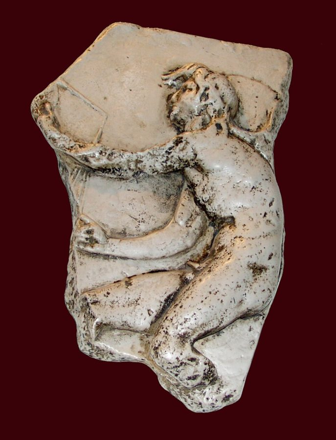
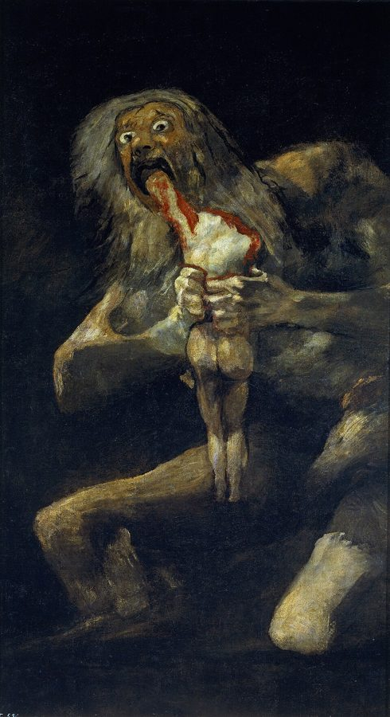
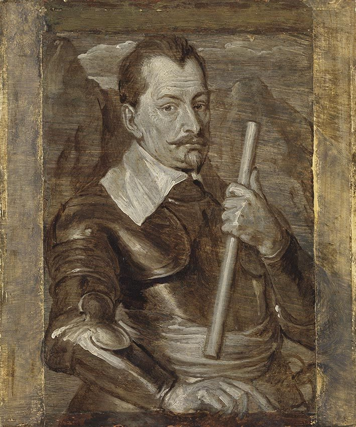
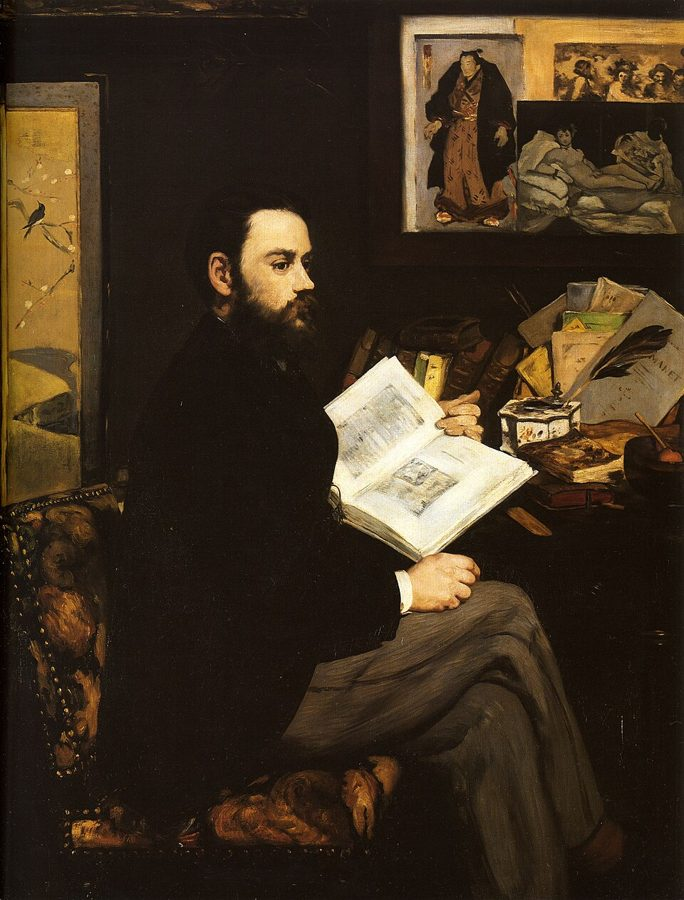

这一页在做什么
这一页是第 4 章全章，共三节。前几章谈的多是时间够不够长，这一章换一个问题：是不是时候。作者从希腊人的两位时间之神讲起，老人克罗诺斯和少年凯洛斯（kairos，时机），再看希腊医生、罗马修辞家和德国浪漫派怎样理解时机；然后到席勒的历史剧和茨威格写的滑铁卢里，看人怎样错过时机；最后走进左拉小说里的巴黎交易所。读的时候抓一条线：时机是一段短时还是一个点，谁抓住了它。

克罗地亚特罗吉尔修道院藏有一块古代凯洛斯浮雕，这是它的一件复制品，1974 年做的。图片说明页称原型是利西波斯公元前 4 世纪的作品。前额那绺头发，就是迎面抓住时机的地方。Agnostizi，公有领域，维基共享资源 读之前：这一页在全书的哪里
上一页（第 3 章末）停在海涅和马克思：历史在加速，思想急着变成行动。前几章量的多是时间的长短，这一章问时间的「质」：是不是时候。第 7 段作者把你拉回第 1 章那句格言，补上紧接着的那一句。kairos 这个词在第 2 章讲浮士德时出现过一次。第 16 段说浮士德见「第 3 章第 4 节」，其实在第 2 章第 4 节（本站 02b），翻过去找不到不是你的问题。
时间不够用，除了延长生命、缩短技艺，「抓住时机」算不算第三条路？还是它只会让时间显得更短？
读的时候带着这几个问题。不用先找答案，读完回来对照「检查一下理解」。
第 9 段作者为什么要强调 kairos 是「一段」而不是「一个点」？这和第 11 段说的「瞬间」有什么不同？§1
席勒剧中的几个人物，谁抓住了时机，谁错过了，谁只是自以为抓住了？§2
滑铁卢之战是谁的「命运时刻」？作者为什么说它只能从反面算？§2
交易所里的萨卡尔和贡德曼，谁更懂得时机？§3
这一页的路线
§1 有两处花饰分隔。先讲老神克罗诺斯，一路讲到歌德的驿车诗；第一处花饰之后换成少年凯洛斯，再回到第 1 章的希波克拉底格言，经盖伦到西塞罗，这一段是在给 kairos 下定义；第二处花饰之后跳到十八世纪末，kairos 被压成「瞬间」，例子是歌德的诗和浮士德。§2 拿席勒的三部剧检验「抓住时机」，重点在《华伦斯坦》，花饰之后转到茨威格写的滑铁卢。§3 从战场跳到巴黎交易所，其实沿用同一套说法：左拉自己就用奥斯特利茨和滑铁卢给萨卡尔的胜败起名。觉得「怎么从神话跳到股市」时，抓住一个问题就不会散：每个例子里，时机是一段还是一点，谁抓住了。
§1 第 1–16 段
§2 第 17–40 段
§3 第 41–49 段
克罗诺斯
歌德的驿车
凯洛斯
一段短时 盖伦、西塞罗
压成一点
歌德的瞬间
席勒的剧 莫蒂默、波萨
命运时刻 华伦斯坦等星象
滑铁卢 茨威格
左拉的交易所
短时即财富
本站示意图。蓝点是概念那条线（时间之神，时机怎样被理解），橙点是作品那条线（诗、剧、小说），折线是阅读顺序，虚线分开原书的三节。 作者落在哪： kairos 是对时间短缺的另一种回应：不问多长，问是不是时候。可它本身就短，反倒让时间显得更短。浪漫派把它压成一刻抵一生的瞬间，席勒的剧和滑铁卢里却多是错过；到了交易所，短时间成了财富真正的媒介。
分节地图
这一页是原书第 4 章的第 1–3 节，也就是这一章的全部。粗体是这一节的主角；斜体是英文这一节开头的几个词，在电子书里搜它就能跳到那里；节里的转折用段号点出来。读完打个勾。
克罗诺斯和凯洛斯：老人与少年约 1500 词 The Greeks had two concepts for … 第 5 段起换成凯洛斯，第 11 段起「一段」被压成「一点」。第 9 段是关键。 席勒的华伦斯坦，茨威格的滑铁卢约 1200 词 As a historian and dramatist, Friedrich … 第 22–37 段是《华伦斯坦》，第 38 段起转到茨威格写的滑铁卢。 左拉《金钱》里的两场交易所决战约 1200 词 In Emile Zola's novel Money … 第 47、49 段是两场决战，左拉分别叫它们奥斯特利茨和滑铁卢。
先用中文过一遍：这一页的概念
作者常常一笔带过、默认你懂的概念，这里先从书外讲一遍：它从哪来，是什么意思。它在这一页起什么作用，看每块最后一句。讲过的概念都汇总在概念汇总 。
§1 克罗诺斯和萨图恩：时间老人 Kronos / Chronos，拉丁文 Saturnus；Father Time 希腊神话里的克罗诺斯（Kronos）是宙斯的父亲，怕被子女推翻，生一个吞一个。他的名字和表示「时间」的 chronos 只差一个送气音，古人就把两者当成一回事：西塞罗在《论神性》里已经说 Kronos 就是 chronos，罗马人的萨图恩得名于「吃年岁吃饱了」。这样一来，吞吃子女就被读成时间吞噬岁月。后来的画家给他配上镰刀（本是农神的镰刀）和沙漏，成了欧洲画里拿镰刀、带沙漏的白胡子「时间老人」。潘诺夫斯基 1939 年的论文《时间老人》讲的就是这个形象怎么拼起来的。占星术里萨图恩管的土星，还主管忧郁。

戈雅《萨图恩吞噬其子》，「黑色绘画」之一，原是画在他住所墙上的壁画，今藏马德里普拉多博物馆。第 2 段提到的就是这幅。Francisco Goya，公有领域，维基共享资源 在这一页： 第 2–4 段。作者拿它代表长时段、合着生物节律的时间，和后面的凯洛斯对照。
§1 时机 kairos（καιρός），拉丁文 occasio 希腊人说时间有两个词。chronos 是一分一秒往前走、可以计量的时间，英文 chronology、chronic 都从它来；kairos 是「恰好的时候」：医生下药、演说家开口、将军出击，早一步晚一步都不行。雕塑家利西波斯给它塑过像：一个脚生双翼的少年，前额留一绺头发，后脑勺是秃的，迎面来时抓得住，错过了手就打滑。英语成语 take time by the forelock（抓住时机），一般认为说的就是这个形象。拉丁文把它译成 occasio，即英文 occasion 的来源。可以这样分：chronos 问「多久」，kairos 问「是不是时候」。
chronos 长时段，可计量
kairos 盖伦、西塞罗：一段
短，但可以等、可以掂量
压缩
瞬间 前浪漫派：一个点
只能当场抓住
本站示意图。上：克罗诺斯式的时间，一条可以一直量下去的线。中：盖伦和西塞罗讲的 kairos，线上很短的一段（第 9、10 段）。下：前浪漫派以后的「瞬间」，这一段被压成一个点，长度没了，强度更大（第 11 段）。 在这一页： 第 5–10 段讲它的形象和定义，第 9 段说它是一段短时、不是一个点；第 11 段起被压成瞬间 。
§2 命运时刻 Sternstunde（字面「星辰的时辰」），英译 fateful hour 这个词出自占星术：人出生或做大事那一刻的星象决定吉凶，星象吉利、可以动手的那个钟点，就是「星辰的时辰」。1800 年前后它还写作 Sternenstunde，席勒笔下的华伦斯坦就要等「对的 Sternenstunde」再起兵。1927 年茨威格把五篇历史特写编成 Sternstunden der Menschheit（中译本通常叫《人类群星闪耀时》），说这些时刻像星星一样照亮短暂的夜。这个词从此成了德语里的常用说法，指一个决定被压进一天、一小时甚至一分钟，影响却延续很久的时刻；口语里也泛指高光时刻。
在这一页： 第 24 段华伦斯坦等的就是它；第 38–40 段作者追问滑铁卢算谁的命运时刻；第 47、49 段又用在交易所里。
书里的人和作品
按在书里出现的顺序排，标题前是节号。作品只讲到读懂这一节需要的程度。
§1 潘诺夫斯基、伊西多尔和两幅画第 1–3 段的出处都在书后注里。提埃波罗的《时间》在意大利维琴察的瓦尔马拉纳别墅，书里说画里的神拿着镰刀和沙漏，第 8 章讲钟表时还会回到这只沙漏。戈雅那幅画，书里的英文标题写的是复数「其子女」，通行的叫法是单数「其子」。
潘诺夫斯基 Erwin Panofsky，1892–1968 德裔美国艺术史家，图像学的奠基人之一。第 1 段说克罗诺斯和凯洛斯在艺术里各走各路，引的是他的研究。
塞维利亚的伊西多尔 Isidore of Seville，约 560–636 西班牙主教，编了二十卷的《词源》，中世纪人当百科全书用。第 2、3 段的两句拉丁文出自这部书。
提埃波罗 Giovanni Battista Tiepolo，1696–1770 威尼斯画家，以宫殿和别墅里的大幅天顶画、壁画出名。
戈雅 Francisco de Goya，1746–1828 西班牙画家。《萨图恩吞噬其子》是他晚年画在自家墙上的「黑色绘画」之一。
§1 歌德的两首诗和一个新词《致驿车夫克罗诺斯》（An Schwager Kronos）一般认为写于 1774 年 10 月，歌德当时坐在驿车上，正是狂飙突进的年纪。诗不押韵，是自由节奏。《亚历克西斯与多拉》是哀歌体，1796 年 5 月写成，排在席勒编的《1797 年缪斯年鉴》第一篇，书里写的 1797 是年鉴的年份：青年亚历克西斯坐船远行，回想临别前那一刻，两人才互吐爱意。veloziferisch 是歌德晚年造的词，一般解作意大利文 velocità（速度）加 luziferisch（魔鬼路西法的），书里只讲了「快」这半边。
§2 席勒和他的三部历史剧席勒写过一部《三十年战争史》，第 17 段说他「作为历史学家和剧作家」想这个问题。《唐·卡洛斯》（1787）：西班牙王子卡洛斯的朋友波萨侯爵，在第三幕和国王腓力二世长谈，求他「给人思想自由」，最后替王子赴死。《玛利亚·斯图亚特》（1800 年首演）：苏格兰女王被伊丽莎白一世囚禁，年轻的莫蒂默想救她，事败后在第四幕第四场刺死自己。第 17 段的 quiet madness，在剧里其实是第三幕第六场的舞台说明，形容莫蒂默说「生命只是一个瞬间」时的神情。
席勒 Friedrich Schiller，1759–1805 德国诗人、剧作家，歌德在魏玛的朋友。这一节的三部剧都是他的。
§2 《华伦斯坦》三部曲三部曲（1798–99）由序剧《华伦斯坦的军营》、《皮科洛米尼父子》、《华伦斯坦之死》组成。历史上的华伦斯坦是三十年战争中神圣罗马帝国皇帝的统帅，暗中和瑞典人谈判，1634 年 2 月在波希米亚的埃格尔（今捷克海布）被部下刺杀。剧里他信占星，等星象。书里的几段引文出自不同的部：伊洛的劝告和「时候还没到」在《皮科洛米尼父子》第二幕第六场；布特勒说「伟大的时刻」是在第四幕第四场的宴会上；戈登求「一个钟头」在《华伦斯坦之死》第五幕第六场。

华伦斯坦像，凡·戴克画室的单色油画习作，巴伐利亚国立绘画收藏。Anthony van Dyck（画室），公有领域，维基共享资源
华伦斯坦 Albrecht von Wallenstein，1583–1634 三十年战争中的帝国军统帅，剧中主角。
伊洛 Illo 剧中华伦斯坦手下的将领，一再催他起事。
布特勒 Buttler 剧中的将领，原本效忠华伦斯坦，后来领头刺杀他。
戈登 Gordon 剧中埃格尔的要塞司令，求布特勒宽限一个钟头。
§2 茨威格和滑铁卢《人类群星闪耀时》1927 年底初版只收五篇，打头的就是《滑铁卢的一分钟》（Die Weltminute von Waterloo），后来的版本陆续增到十四篇。茨威格写的主角不是拿破仑，而是元帅格鲁希：拿破仑派他去拦住普鲁士的布吕歇尔，不让它和威灵顿会合，他在大雨里找不到人，又不敢违令回援。第 40 段提到的门采尔 1858 年的画，画的是布吕歇尔和威灵顿在战场上骑马相会，今藏慕尼黑新绘画陈列馆。
茨威格 Stefan Zweig，1881–1942 奥地利作家，以传记和历史特写出名。
格鲁希 Emmanuel de Grouchy，1766–1847 法国元帅，茨威格这篇的主角，被写成一个「中不溜的人」。
§3 左拉的《金钱》左拉的《卢贡-马卡尔家族》共二十部，《金钱》是第十八部，1890–91 年在报上连载，1891 年出书；书里写的 1892 对不上。主角萨卡尔早在第二部《贪欲的角逐》里就出场了，名字是他自己改的，说这名字里有钱的声音，像在数银币。小说取材于 1882 年倒闭的联合总银行。读第 47–49 段要知道两个交易所的说法：萨卡尔押行情上涨（做多），贡德曼押行情下跌（做空），一天之内就分出输赢。

马奈画的左拉，1868 年，今藏巴黎奥赛博物馆。Édouard Manet，公有领域，维基共享资源
巴黎交易所（布隆尼亚尔宫），一战前的明信片，具体年份不详，和书没有直接关系，只是让你看看萨卡尔天天赶去的地方。作者不详，公有领域，维基共享资源
图里的引文
下面这几段在你的电子书里是图片，长按查不了词，也搜不到。每块先说它在屏幕上的位置，再逐行给中文意思；行首的斜体是图里这一行开头的几个词，用来和图对上。古人的诗本站据原作的语言译，不从英译转译。
§1 第 13–14 段 · 歌德《亚历克西斯与多拉》第 15–16 行 · 英译一张，德文原文一张在第 12 段末尾（…confessed their love to each other:）之后。前一张是英译，后一张是德文原文，下面跟德文逐行。
Nur Ein Augenblick … 我真正活过的，只有一个瞬间；这个瞬间抵得过Alle Tage, die … 其余所有的日子，那些平日里冷冷地从我身边消逝的日子。
对照： 德文的 Ein 大写，强调「唯一一个」。verschwindend 本义「正在消逝的」，也有「小得几乎看不见」的意思，英译取后一层译成 tiny；英译的 now 和 seem，原文没有。
der wieget … auf
第 1 行
它抵得过（auf-wiegen：在天平上压过另一头）
德文的可分动词：wieget 在第 1 行末，前缀 auf 甩到第 2 行最后。只看 wieget（称重）会读错，要连上 auf。
Augenblick
第 1 行
（德文）瞬间
字面是「眼睛一瞥」。这一页反复出现的就是这个词，第 12 段的 gefüllter Augenblick 是「充实的瞬间」。
§2 第 19 段 · 席勒《玛利亚·斯图亚特》第四幕第四场，莫蒂默的话 · 只有英译在第 18 段末尾（…already imminent, and he knows it:）之后。本站据席勒的德文原作译，按英译的分行给意思。
Seize the moment! … 抓住这个时机！抢在他前头！And at the last … 在这最后的一刻，我的心要Will freely open, … 自由地敞开，我的舌头要挣脱束缚。
对照： 点线前后隔着一段戏。前一句是莫蒂默劝莱斯特伯爵趁早自救，德文 Kommt ihm zuvor 是「抢在他前头」，「他」多半指刚拿到密信的伯利勋爵，英译成了 anticipate it。点线处莱斯特转身叫卫兵抓他；后两行是他拔刀对着卫兵说的，之后还骂了几句、向圣母祷告，才刺死自己。
Anticipate it!
第 1 行
抢在他前头！
德文 Kommt ihm zuvor。zuvorkommen 是「抢先一步」，不是「预料」。
my tongue will be unleashed
第 4 行
我的舌头要松开，我要把话说尽
德文 meine Zunge lösen：守了很久的秘密，临死前要说出来。下文他就当众骂伊丽莎白是「私生子女王」。
§2 第 25–27 段 · 席勒《皮科洛米尼父子》第二幕第六场，伊洛劝华伦斯坦 · 英译两张，德文原文一张在第 24 段末尾（…lecture him on the laws of kairos:）之后。前两张是英译，第三张是德文原文，下面跟德文逐行。
Oh! nimm der … 噢！趁这个钟头还没溜走，抓住它。So selten kommt … 人一生里很难遇上这样的时刻，Der wahrhaft wichtig … 真正要紧、真正重大。凡是要做出Entscheidung soll geschehen, … 决断的地方，总得有许多事Sich glücklich treffen … 凑巧碰在一起、聚到一处。Und einzeln nur, … 可它们总是一根一根、零零散散地出现：Des Glückes Fäden, … 运气的丝线，也就是种种机会；Die nur in … 只有挤到人生的一个点上，Gedrängt, den schweren … 它们才结成沉甸甸的果实之结。
对照： 英译基本贴着原文。德文第 8 行的 einem（一个）排成斜体，强调「一个」点，正好对上第 11 段说的「压成一点」。同一场里，华伦斯坦答「时候还没到」（第 28 段），伊洛还骂他只会 temporisieren（第 24 段）。
nimm der Stunde wahr
第 1 行
抓住这个钟点
wahrnehmen 加第二格是「利用、把握」，不是常见的「察觉」。这是老式用法。
zerstreuet
第 6 行
（德文）零散的
就是 zerstreut，诗里多写一个 e，凑足音节。
Früchteknoten
第 9 行
（德文）结果实的结
接着前面「丝线」的比喻：线头聚到一点打成结。这个词也可能让人想到植物学的 Fruchtknoten（子房）。英译 fruitful knots 只留了「结」。
§2 第 31–32 段 · 《皮科洛米尼父子》第四幕第四场，布特勒的话 · 英译一张，德文原文一张在第 30 段末尾（…who is blunt about luck in war:）之后。前一张是英译，后一张是德文原文。
Es ist ein … 这是时代的一个伟大时刻，Dem Tapfern, dem … 它眷顾勇敢的人、果断的人。
对照： 书里把这两行放在埃格尔的刺杀前，其实出自前一部的宴会：布特勒当时还在向华伦斯坦表忠心，连家产都许给他。sie 指 Zeit（时代、时势）。图里的 Enschloßnen 少了一个 t。
dem Entschloßnen
第 2 行
（德文）果断的人
图里印成 Enschloßnen，漏了 t。entschlossen 是「下定决心的」，形容词当名词用。
§2 第 34–35 段 · 席勒《华伦斯坦之死》第五幕第六场，戈登和布特勒 · 英译一张，德文原文一张在第 33 段末尾（…contemptuously rejects the request:）之后。前一张是英译，后一张是德文原文，下面跟德文逐行。
Gordon (hàlt ihn): … 戈登（拉住他）：只要一个钟头！Buttler: Laß mich … 布特勒：放开我。这么短的期限Die kurze Frist … 能帮他什么？Gordon: O die … 戈登：噢，时间是Ein wundertätger Gott. … 一位会显奇迹的神。一个钟头里，要流过Viel tausend Körner … 成千上万粒沙子；人心里的念头Bewegen sich im … 也转得一样快。Nur eine Stunde! 只要一个钟头！Buttler: Ihr erinnert … 布特勒：您倒提醒了我，Wie kostbar die … 每一分钟有多宝贵。
对照： 原剧里戈登在「只要一个钟头」后面还有四行多：一个钟头里，布特勒的心、华伦斯坦的心都可能回转，好消息也可能从天而降，最后一句是「一个钟头什么做不成！」德文图里把这几行都省了，英译用省略号带过，却留下了最后一句 What can an hour not do!。图里的 hàlt 应为 hält。
Die kurze Frist
第 3 行
（德文）短短的期限
英译作 a short reprieve。Frist 是全书后半的关键词，见第 8 章的
期限 ；它在全书里第一次露面，就是这里。
wundertätger
第 5 行
（德文）显奇迹的
就是 wundertätiger，诗里省掉一个音节。
Ihr erinnert mich
第 9 行
您倒提醒了我
Ihr 在这里是对一个人的敬称「您」，不是「你们」。布特勒是反话：戈登求他宽限，他却因此想到一分钟也不能耽搁。
词与短语
你用 Kindle，单个生词长按就能查，这里只收词典帮不上的：每个词都认识、合起来不懂的说法，学术腔，没翻译的外文，典故。斜体小字是原句里连续的几个词，错字照电子书原样，搜它就能跳到那里。图里的词在上面「图里的引文」里。
§1 克罗诺斯和凯洛斯：老人与少年
personified and allegorized
Both were personified and allegorized in human …
被拟人化，画成寓意形象
allegory 在美术里指用一个人物代表一个抽象观念，比如蒙眼持秤的女子代表正义。
Chronos, id est tempus
… a god of time (Isidore of Seville: …
（拉丁文）克罗诺斯，也就是时间
id est 就是英文缩写 i.e. 的全称。伊西多尔一句话就把神名和「时间」画了等号。
devoured his children, the years
… because he devoured his children, the years, …
吞吃他的孩子们，也就是岁月
逗号后的 the years 是同位语：神话里吞的是子女，寓意里吞的是一年年的时间。
takes his time; he is time
This god takes his time; he …
这位神不慌不忙；他本身就是时间
take one's time 是习语「慢慢来」，作者紧接着字面一转：他「拿着」的就是他自己。文字游戏，读出两层。
a temporis longitudine, quo saturetur annis
(a temporis longitudine, quo saturetur annis).3
（拉丁文）取自「时间之长」，因为他吃年岁吃饱了
把 Saturnus 和 saturare（吃饱）连在一起，前面的 a satu 则连到 serere（播种）。都是古人凭字面猜的词源，现代语言学不这样看。
appropriately enough for the period
… journey of life, made-appropriately enough for …
（坐驿车）正合那个年代
两个连字符原是破折号，中间是插入语：made — appropriately … period — in a mail-coach。这是作者的调侃：人生之旅坐的也是当时的交通工具。
Schwager
Here, Kronos is the driver (Schwager).
（德文）驿车夫
本义是姐夫、妹夫、小舅子，十八世纪的旅客习惯这样亲热地招呼驿站的车夫。
Spute dich, Kronos!
urges him to hurry (Spute dich, Kronos!).
（德文）快点，克罗诺斯！
诗的第一句。年轻乘客催时间快走，和后面去意大利途中的歌德抱怨「可怕的速度」正好相反。
Sturm and Drang
… in jaunty Sturm and Drang manner …
（德文）狂飙突进
1770 年代德国青年作家的运动，崇尚激情和天才，青年歌德、席勒都在其中。英译把德文的 und 换成了 and。
Everything velociferous!
… European society's terrible addiction to speed: …
一切都快得像魔鬼！
歌德的新词 veloziferisch，电子书里断成了 velozi ferisch。见上面「歌德的两首诗和一个新词」。
on a knifeedge
… even when dancing on a knifeedge.
在刀刃上
古代的凯洛斯像常让他脚踩或手持剃刀刃。英语习语 on a knife-edge 又是「悬而未决、千钧一发」，两层意思都在。
approach the latter head-on
… he must approach the latter head-on …
迎面朝他走过去
head-on 是「正面、迎头」。the latter 指前面说的这位神。时机只能迎面抓，从背后追就晚了。
finds no purchase
… his hand finds no purchase on …
抓不住，手打滑
purchase 的旧义是「着力点、抓手」，和买东西无关。
feminine in gender
… which is feminine in gender, does …
（语法上）是阴性的
拉丁文 occasio 是阴性名词，没法拿一个少年的形象来代表，所以作者说后来在某种程度上由同样是阴性的福尔图娜（命运女神）来补这个空。
ho de kairos oxys
Hippocrates' Greek is ho de kairos oxys.
（希腊文）而时机是迅疾的
格言第二句。oxys 本义「尖锐」，医学里的「急性病」也用这个词：时机像急症一样来得快、去得快。格言前一句见
第 1 章 。
hardly has … than
Thus hardly has Hippocrates noted the …
刚说完……就……
倒装句：Hippocrates has hardly noted A than he refers to B。规范的说法是 no sooner … than 或 hardly … when，这里混用了。
chronological asymmetry
… the chronological asymmetry of life …
（克罗诺斯式的）时间长短上的落差
chronological 这里不是「按时间顺序的」，而是「关于 chronos 的」：生命短、技艺长，量上不对称，就是第 1 章的
时间剪 。
rheon aei
… in constant flux (rheon aei). Hence …
（希腊文）永远在流动
会让人想到赫拉克利特的 panta rhei（万物皆流）。病人的身体时时在变，下手的时机也跟着变。
oligochroniotatos
… short span of time (oligochroniotatos).8
（希腊文）时间最短的
oligos（少）加 chronos（时间），再加最高级词尾 -tatos。一个词就把「量少到极点」说尽了。
not without importance
… is not without importance for …
相当重要
双重否定往轻里说，实际是强调。作者下面正要亮出这一节最要紧的判断。
time to wait and weigh
There is always time to wait …
总有时间等一等、掂量掂量
weigh 接着下文凯洛斯手里的天平：掂量，就是在秤上称。
pars temporis
… a span of time (pars temporis) …
（拉丁文）时间的一部分，一段时间
西塞罗早年的修辞学著作《论构思》里的定义，注 9 给了拉丁原句。
idoneam opportunitatem
… particular suitability (idoneam opportunitatem) for …
（拉丁文）合宜的机会
opportunitas 来自 ob portum，「朝着港口」：风向正好可以进港。英文 opportunity 由此来。
In the later age that was
In the later age that was, …
在后来那个……的时代
德文式长句。主干是 In the later age … kairos dropped out of view，中间 that is 引出的是同位语，说这个后来的时代就是前浪漫派和早期浪漫派；that was … modernity 是插进去的定语从句：由于启蒙运动，这个时代不再受庇护，躲不开现代的挑衅。
dropped out of view
… kairos dropped out of view. We …
从视野里消失了
不是说没人谈时机了，而是「一段短时」那种 kairos 不见了，下一句说它被换成了一个点。
seize opportunity's forelock
… could nimbly seize opportunity's forelock is …
抓住时机
英语老习语 take time by the forelock，一般认为就出自凯洛斯额前那绺头发。
gefüllter Augenblick
(gefullterAugenblick). Even so self-possessed person …
（德文）充实的瞬间
电子书丢了变音和空格。一刻里装满了一生的分量，见 02b 的
瞬间 。
Even so self-possessed person as Goethe
Even so self-possessed person as Goethe
就连歌德这样沉稳自持的人
英译漏了一个 a：even so self-possessed a person as。self-possessed 是「镇定、不失分寸」，不是「自私」。
Sesenheim poems
… many of his Sesenheim poems are …
塞森海姆诗
1770–71 年歌德在斯特拉斯堡求学，爱上阿尔萨斯小村塞森海姆的牧师女儿弗里德里克，写了一组情诗。
greeting and bidding farewell
… in which greeting and bidding farewell …
相见和告别
暗指这组诗里最有名的一首《欢迎与离别》（Willkommen und Abschied）。
the reservoir
… chronos-time is the reservoir from which …
蓄水池
比喻：瞬间里装的满，是从一辈子的时间里引来的水。
limiting case
In the poetically sublime limiting case,
极限情形
数学和物理的说法：把条件推到头时的情形。推到头，一整个生命都被收进一个瞬间。
chap. 3, sect. 4
We have already seen (chap. 3,
第 3 章第 4 节（应为第 2 章第 4 节）
交叉引用指错了，浮士德在第 2 章第 4 节，本站
02b 。
tonic or toxic
… lose its tonic or toxic effect …
提神的或有毒的
两个词只差一个字母，英译读来像有意押韵。前面把梅菲斯特给浮士德的东西叫作 temporal drug，「时间的药」，药可以补，也可以毒。
a higher power intervenes
… when a higher power intervenes, still …
更高的力量插手
委婉地指上天：《浮士德》第二部结尾，天使把浮士德的灵魂从魔鬼手里接走。
§2 席勒的华伦斯坦，茨威格的滑铁卢
rational reservations regarding quiet madness
always with rational reservations regarding
（对这种「安静的疯狂」）总带着理性的保留
句子说「玛利亚·斯图亚特这样叫它」，像是女王说的话；其实「安静的疯狂」是剧里的舞台说明，形容莫蒂默的神情，这里的 Mary Stuart 多半应理解成剧名。
misgauges the weight of his words
But he misgauges the weight of
掂错了自己话的分量
gauge 是量具。波萨以为一番长谈能打动国王，国王只当他是个怪人。
Give them freedom of thought!
… sees his great dialogue with the king …
给人思想自由吧！
德文 Geben Sie Gedankenfreiheit!，第三幕第十场，席勒最有名的台词之一。
Nützen / Muß man den Augenblick
Mug man den Augenblick, der einmal
（德文）时机只来一次，必须利用
电子书印成 Ni tzen / Mug man，应为 Nützen / Muß man。第三幕第九场波萨独白的开头，他是接着阿尔巴公爵刚说的话往下想。
strange dreamer
… the stammering of a …
古怪的空想家
德文 Sonderbarer Schwärmer!，国王对波萨的评语。Schwärmer 指满脑子理想、不切实际的人。
O Karl, wie süß, / Wie groß ist dieser Augenblick!
Wie grog ist dieser Augenblick!
（德文）噢，卡尔，这一刻多么甜美，多么伟大！
电子书印成 wie sug / Wie grog，应为 süß / groß；英译前面的 0 Carl 也是 O 的错字。第五幕第三场，波萨已经决定替王子去死。
bannen
(bannen) up to this point in
（德文）（用法术）镇住、拴住
运气被想成可以用咒语定住的东西。英译 captivate 只剩「迷住」，丢了魔法的意思。
Gelegenheit
(Gelegenheit-the term Schiller repeatedly uses in
（德文）机会、时机
和 gelegen（方便的、合适的）同根。作者说它就是 kairos 的拉丁名 occasio 的德文对应。
he urges even a woman, the countess
… he urges even a woman, the …
（应理解为）连一个女人、伯爵夫人，都催他动手
英译读起来像华伦斯坦在催伯爵夫人。照剧本，是特尔茨基伯爵夫人在《华伦斯坦之死》第一幕第七场对华伦斯坦说「时候到了」（Der Augenblick ist da），催他动手。
temporisieren
(temporisieren) rather than act. Thus
（德文）拖延，观望
从法文 temporiser 借来，词根是拉丁文 tempus（时间）：拿时间当挡箭牌。
lecture him on
… listen to Illo lecture him on …
给他上一课，教训他
lecture somebody on 是居高临下地训人，下属教训统帅，口气就在这个词里。
if indeed there ever was one for him
… if indeed there ever was one …
如果他真有过这样的时机的话
作者顺手收回半句：也许华伦斯坦从来就没有过他的 kairos。
blunt about luck in war
… Buttler, who is blunt about luck …
说起战场上的运气毫不含糊
blunt 是说话直、不绕弯。下面那两行其实出自前一部，见「图里的引文」。
repent or atone
… even have time to repent or …
忏悔或赎罪
死前来不及忏悔，在基督教里是很重的事。第 6 章讲《哈姆雷特》时作者还会回到这一点。
Gordon asks the fortress commander
When Gordon asks the fortress commander
戈登，也就是要塞司令，请求……
英译这句读不通：戈登本人就是埃格尔的要塞司令（第 37 段），他求的是布特勒。照图里的对白读就清楚了。
short reprieve
… at least this short reprieve, the …
短短的宽限
reprieve 本指死刑的暂缓执行。德文原文是 Die kurze Frist，见「图里的引文」。
has the last word
… has the last word in this …
说了最后一句话（也是定论）
双关：既是剧里的台词，也是对这件事的评判。剧里这句「世界就系在这一刻上」（第五幕第九场），是戈登急着去阻止行刺时喊的，作者把它读成历史学家的眼光。
still ringing in our ears
With Gordon's last words still ringing
余音还在耳边
过渡句：从席勒的剧场，转到真实的战场。
Sternstunden der Menschheit
(Sternsti nden der Menschheit)? That is
（书名）人类群星闪耀时
字面是「人类的星辰时刻」。电子书把 ü 认成了 i 加空格。见概念块「命运时刻」。
mittlerer Mann
(mittlerer Mann) who cannot find the
（德文）中不溜的人
茨威格对格鲁希的评语：不坏，也不出色，偏偏被放在决定历史的位置上。
override Napoleon's order
… does not dare to override Napoleon's …
违抗拿破仑的命令（自作主张）
override 是凌驾、推翻。茨威格写的正是这一刻：听见炮声，该不该违令回援。
die entscheidende Sekunde
… neglected for only a short time …
（德文）决定性的一秒
书里给的德文原话，多半出自茨威格这篇（作者没注出处）。从「一小时」到「一分钟」再到「一秒」，时机越缩越短。
ex negativo
… fateful hour ex negativo, since …
（拉丁文）从反面说
学术腔，指从否定的一面来界定。滑铁卢算命运时刻，是因为一颗星落下而没有星升起。
star finally sinks
… Napoleon's star finally sinks and Europe's …
（拿破仑的）命星终于落下
star 是双关：天上的星和人的运数，正好接回 Sternstunde 的「星」。
§3 左拉《金钱》里的两场交易所决战
cuts up this material like a jigsaw puzzle
… cuts up this material like a …
像拼图一样把史料剪开
左拉把真实事件拆成小块，挑最醒目的几块，混着虚构重新拼。所以别把小说当历史读。
Union Generale
the Union Generale (1878-82), that especially
联合总银行
法国的一家天主教背景的投资银行，1882 年 1 月倒闭，引发巴黎股市崩盘。法文是 Union Générale。
Compagnie des Indes
… dubious shares of his Compagnie des Indes.
（法文）印度公司
苏格兰人约翰·劳在法国经营的特许贸易公司，股价被炒上天，1720 年崩盘，史称密西西比泡沫。
the significant name of Saccard
… with the significant name of Saccard …
萨卡尔这个意味深长的名字
significant 是「有含义的」，不是「重要的」。括号里的 sacker, thief 取的是英文 sack（洗劫）的意思。
early global player
This early global player needs only …
早期的全球玩家
global player 是今天财经新闻的词，作者故意用在十九世纪人身上，带着讽刺。
the true medium of wealth
… the true medium of wealth, and …
财富真正的媒介
medium 在经济学里说「交换媒介」，通常指货币。作者说在股市上，起这个作用的是短时间，也就是速度。
sanguine temperament
His sanguine temperament, which incessantly drives
多血质的脾性
古代四体液说里的一型：热情、好动、急躁。sanguine 平常是「乐观」，这里是体液学的术语。
le prix du temps
(le prix du temps).
（法文）时间的价格
phlegmatic
from Saccard's: he is phlegmatic.
黏液质的，冷静迟缓的
四体液说的另一型，和萨卡尔的多血质相对。phlegm 平常是「痰」，这里是体液学的术语。
coup
He has assembled all he needs
（法文）一击，大手笔的操作
原义是「一击、一下」。第 48 段作者说，这是交易所里用来指 kairos 的词。
on a rise in the market
… wagers all his money on a …
押行情上涨（做多）
他赌的是战争会和平了结、股价会涨。贡德曼后来押的正好相反。
Venetia
… the armed conflict over Venetia in …
威尼托
意大利东北部以威尼斯为中心的地区。1866 年普奥战争后，奥地利把它让给法国，法国再转给意大利。
not the author's last word
But that is not the author's
左拉还没写完
这里的 author 是左拉，不是 Weinrich：小说还有后文。
speculates on a fall in prices
Gundermann speculates on a fall in prices.
押行情下跌（做空）
先借来股票卖掉，等跌了再低价买回来还，赚中间的差价。
reckoned on
And the one who has reckoned
算准了
reckon on 常是「指望」，这里取字面的「算」：谁把时间算得最短，谁赢。
nemesis divina
An irony of fate or perhaps nemesis
（拉丁文）神的报应
Nemesis 是希腊的报应女神。作者在括号里拿俗语 easy come, easy go（来得容易去得快）给它作注，一庄一谐。
the game is up
Now the game is up. Justice
戏演完了，完了
习语，说骗局败露、一切到头，不是「游戏升级」。
Justice is on the march
… Justice is on the march. But
司法出动了
字面「正义在行进」，指警察和法院要来了；接着的 prison cell 说萨卡尔进了监狱。
读不通的扫描错字：
… (Alles velozi ferisch!).4 应为 veloziferisch，一个词。… in the work of Hippocrates.? We … 问号是注号 7 认错了。(Sternstfinde)? Fateful for whom? … 应为 Sternstunde。… (the 1870s and i88os) but also … 应为 1880s。In chapter io, the sun … 应为 chapter 10，第十章。
读完：作者到底说了什么
读完这一页的几节再看。下面是作者在这几节里的论点，由本站按论点重新组织，不按原书的顺序；每条右上角是依据所在的段落，拿不准就回书里那几段再读一遍。
时间不只有长短，还有好坏：这就是 kairos 希腊人有两个时间概念：克罗诺斯代表长时段、合着生物节律的时间，凯洛斯代表「对的」时间。作者借西塞罗的定义说明，kairos 把量（短）和质（适合行动）连在一起。
§1 第 1、3、5、10 段 时机易逝，让本就短的时间更短 希波克拉底刚说完生命短、技艺长，紧接着说时机稍纵即逝。作者说，在希波克拉底看来，时机的易逝加深了生命和技艺之间的落差；盖伦又把「易逝」推到最高级。
§1 第 7、8 段 时机是一段短时，不是一个点 作者从盖伦的注释推出：医生要抓的时机虽短，却有长度，可以等、可以掂量，只是容不得拖延。前浪漫派和早期浪漫派把它压成一个点，失去长度、换来强度，成了「充实的瞬间」。
§1 第 9、11、12 段 历史剧和战场上，多的是错过的时机 作者说席勒对「时机神话」以怀疑为主，《华伦斯坦》说到底写的是错过时机。茨威格把滑铁卢写成命运时刻，作者只肯从反面承认：拿破仑的星落下了，欧洲的星却没升起。
§2 第 17、22、29、40 段 到了交易所，短时间成了财富的媒介 电报让行情几乎即时传开，投资人更明白：股市上，短时间也就是速度，才是财富真正的媒介。左拉写的两场决战各在一个交易日里决出，谁把时间算得最短，谁就赢。
§3 第 44、47、48 段
合起来： 第 1 章说时间短，所以要讲经济；这一章补上另一面：时间有好坏，抓住对的那一段，一刻能抵许多日子。可时机本身就短，作者的例子又多是错过和失败，kairos 并没有让短缺缓下来。
值得停下来的句子
There is no need to seize Kairos's forelock in a sudden reflex action. There is always time to wait and weigh— §1 第 9 段。本站译：不必在一个突如其来的条件反射里去抓凯洛斯的额发。总有时间等一等、掂量掂量。
两句话，一否一肯，把凯洛斯的两个标志拆开来用：额发是「要抓」，天平是「可以称」。作者的判断落在 always 上：时机虽短，总有一小段可以用来等和想。下一句他马上补了限制（但行动的时间总是很有限），所以这不是劝人慢慢来，而是说时机有长度。和第 11 段的「一个点」对着读。
on the stock market, time, and indeed short time, is the true medium of wealth— §3 第 44 段。本站译：在股市上，时间，而且正是短时间，才是财富真正的媒介。
主干是 time is the true medium of wealth，中间 and indeed short time 是插进来的追加，一步收紧：不是随便什么时间，是短的时间。medium 一词把时间放到通常由货币占着的位置上，第 1 章「时间就是金钱」在这里换了个方向：不是时间像钱，而是短时间生钱。
检查一下理解
先在心里答，再点开。答错的那题，回书里把对应那一节再读一遍。
1.（§1）克罗诺斯为什么会成为拿镰刀、带沙漏的时间之神？ 他的名字和 chronos（时间）相近，从很早起就被混同，罗马人又把他叫作萨图恩。他吞吃子女的神话被读成时间吞噬岁月，伊西多尔还把萨图恩解成「吃年岁吃饱了」。
2.（§1）格言紧接着的那一句「时机稍纵即逝」，在作者看来对前半句起什么作用？ 它加深了前半句的落差：时机易逝，使本就短的人生时间显得更短。盖伦的注释又把「易逝」升成了最高级。
3.（§1）作者凭什么说 kairos 是「一段」而不是「一个点」？ 依据盖伦：医生能下手的时间很窄很短，但仍是一段时间。所以可以等、可以掂量（凯洛斯手里有天平），只是不能拖延。西塞罗的定义也叫它「时间的一部分」。
4.（§1）「充实的瞬间」和盖伦讲的 kairos 有什么不同？书里举了谁的诗？ 前浪漫派和早期浪漫派把一段短时压成一个点，没了长度，强度却大大增加。歌德的《亚历克西斯与多拉》里，一个瞬间抵得过其余所有日子。
5.（§2）华伦斯坦为什么错过了时机？ 他信星象，等自己的星辰时刻，伊洛骂他拖延。等星象终于对了，皇帝、瑞典人和倒戈的部下早已动手，他在埃格尔被刺杀。
6.（§2）作者为什么说滑铁卢只能「从反面」算命运时刻？ 胜利者布吕歇尔和威灵顿在门采尔的画里彬彬有礼，不像命运时刻。决定性的是被格鲁希耽误的增援：那一刻拿破仑的星落下，欧洲的星却没有升起。
7.（§3）萨卡尔和贡德曼的两场交易所决战，各被叫作什么？谁靠什么赢了？ 萨卡尔押上涨，靠威尼托和平的消息大胜，是他的奥斯特利茨；后来贡德曼精确地准备了押下跌，在一个交易日里把他打垮，那是萨卡尔的滑铁卢。
用一句话说这一页，写给一个没读过的人。
想一想：你有没有过一次「事后才知道那就是时机」的经历？当时你是在等一个更好的时候，还是根本没认出它？如果重来，你缺的是更快的反应，还是更早的准备？
精彩回顾
读过又忘了，从这里想起来。挑的是这一页最值得记住的人、说法和比喻，不按原书顺序；每条后面是节号，想细看就回书里那一节。全书各页的这一节都收在全书回顾 。
一句话： 时间除了长短还有好坏：kairos 是稍纵即逝的恰当时机，作者从希腊神话一路追到席勒的战场和左拉的交易所，看到的多是错过。
老人和少年 希腊人的两位时间之神：克罗诺斯是长时段的老人，后来拿着镰刀和沙漏，吞吃岁月；凯洛斯是有翼少年，只留额前一绺头发，错过就抓不住。
§1 稍纵即逝 希波克拉底「生命短，技艺长」后面紧跟着「时机稍纵即逝」。作者说，时机易逝，让本就短的时间更短。
§1 一段，不是一点 盖伦眼里的时机虽短却有长度，可以等、可以掂量；前浪漫派把它压成一个点，成了一刻抵一生的「充实的瞬间」。
§1 华伦斯坦等星象 席勒笔下的华伦斯坦等着星象给他命运时刻，伊洛骂他拖延。星象对了，人已被出卖，最后在埃格尔被刺死。
§2 反面的命运时刻 茨威格把滑铁卢写成人类的星辰时刻，主角是不敢违令回援的格鲁希。作者说它只能从反面算：拿破仑的星落了，欧洲的星没升。
§2 交易所里的滑铁卢 左拉《金钱》里，萨卡尔押涨大胜，贡德曼押跌复仇，都在一个交易日里决出：在股市上，短时间才是财富真正的媒介。
§3